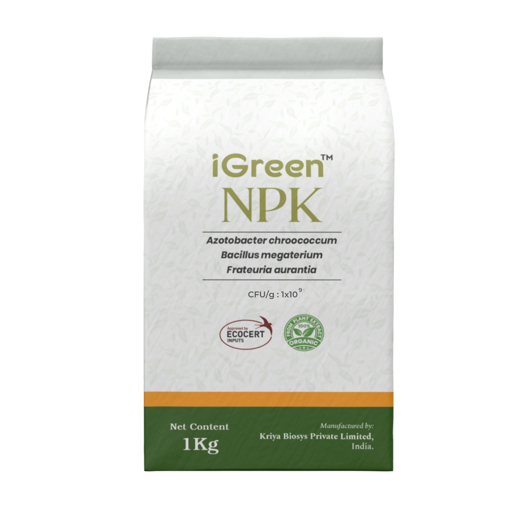
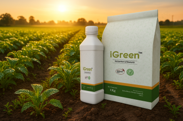
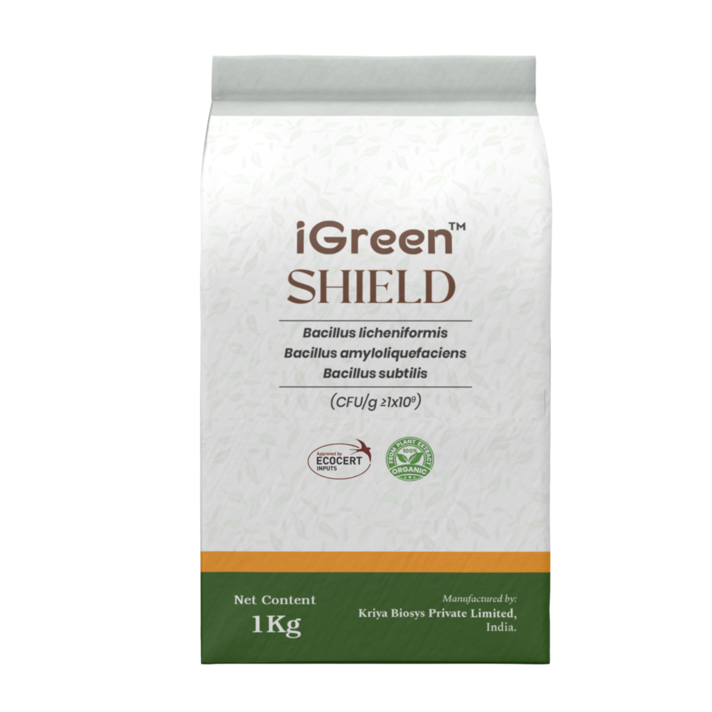
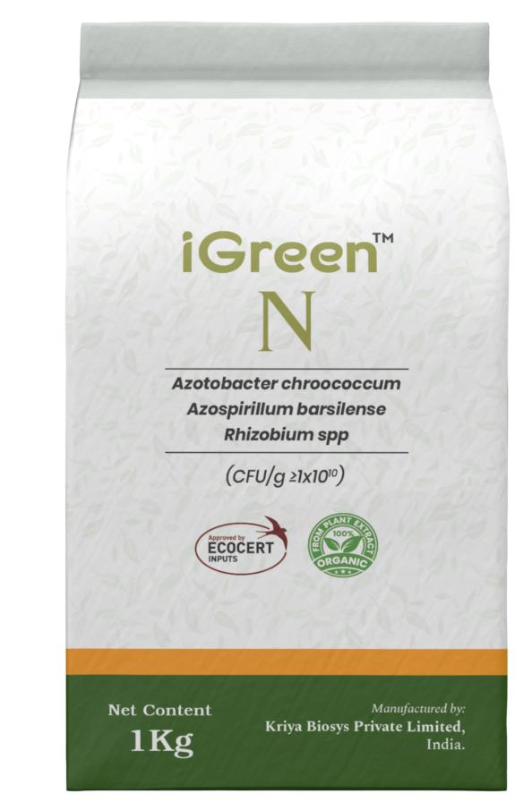
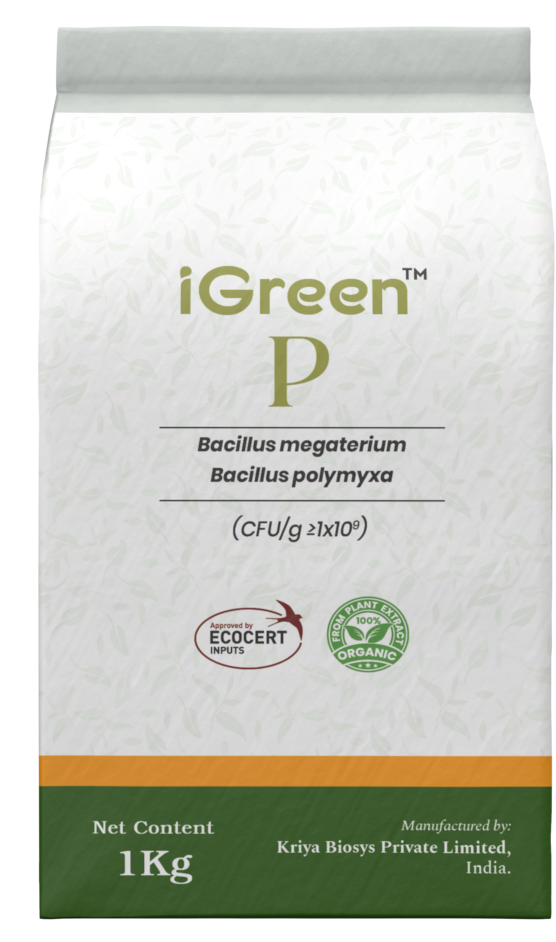
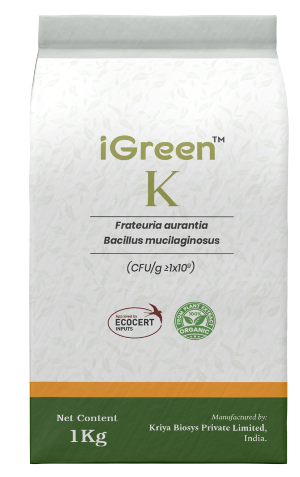
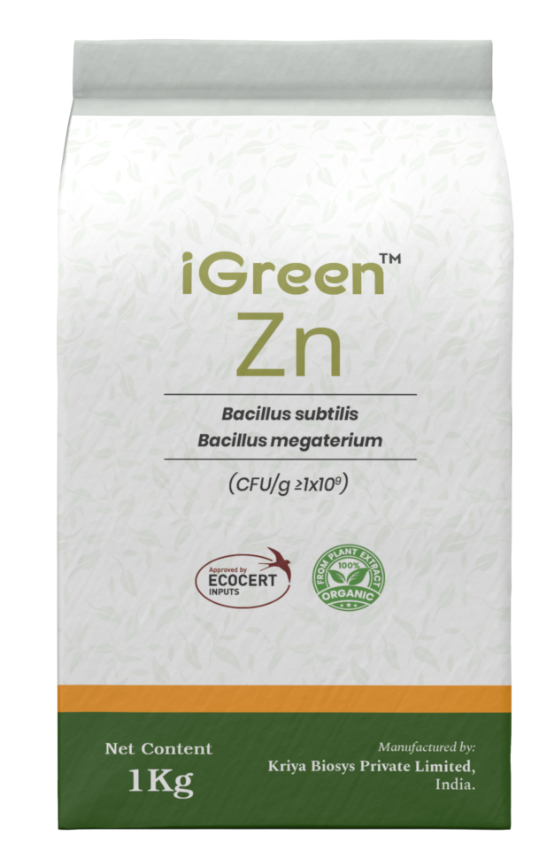
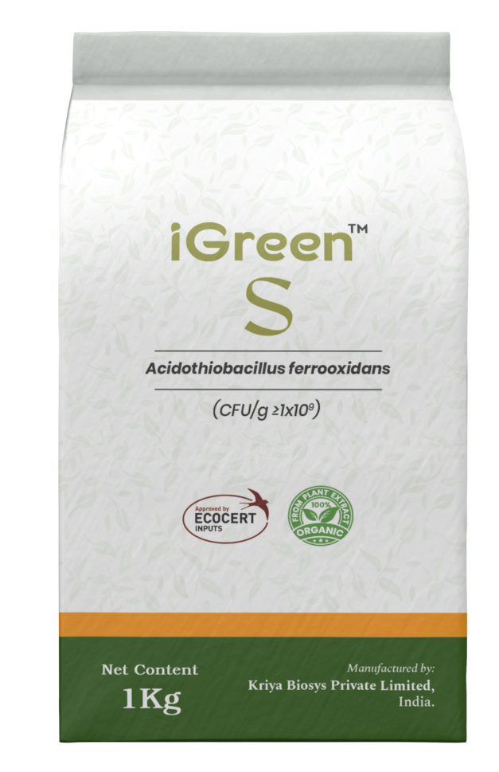
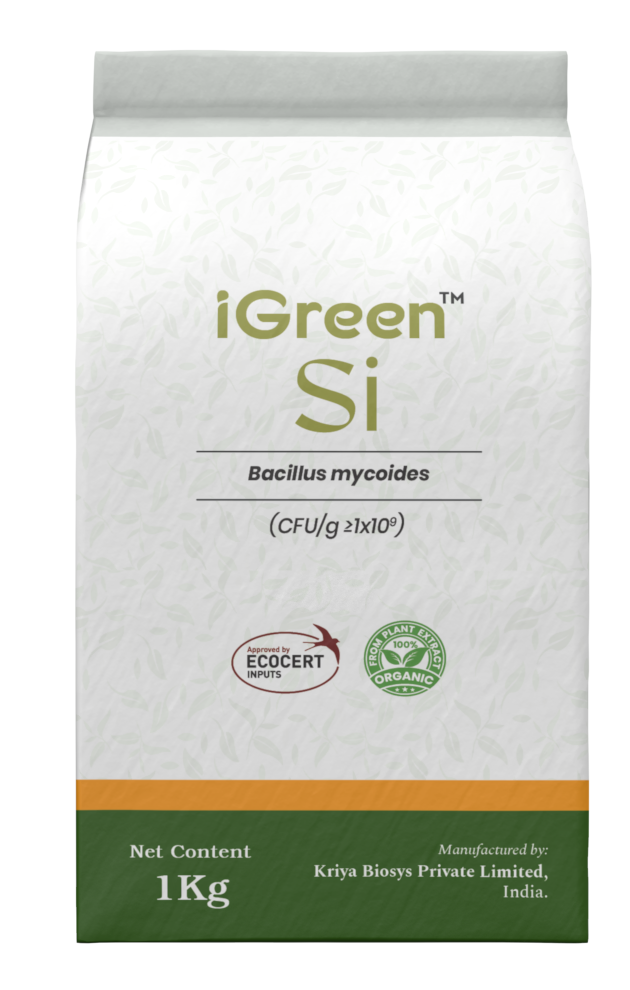
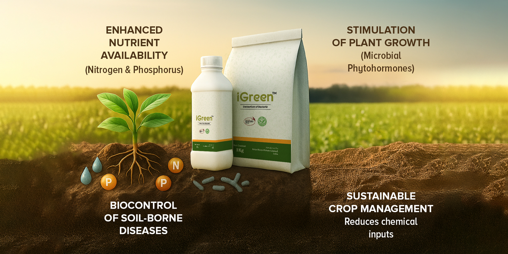

IGreen NPK
Paenibacillus elgii + Bacillus mucilaginosus + Bacillus megaterium
Download technical sheet
IGreen is Kriya's microbial biofertilizer platform — a family of eight nutrient-targeted consortium WP formulations, each delivering 1 × 109 CFU/g of active microbial biomass. Each variant is tailored to a specific nutrient dimension: broad-spectrum NPK, rhizosphere conditioning, nitrogen, phosphorus, potassium, zinc, sulfur, or silicon. This allows distributors to match each soil and crop requirement precisely rather than relying on generic multi-nutrient products.
Eight targeted formulations address specific nutrient dimensions — from broad NPK to micronutrient silicon.
All variants in wettable powder format for consistent drench, drip, and soil incorporation programs.
Backed by technical documentation and regulatory support for multi-market distributor programs.
Select the IGreen variant that matches your soil condition and crop nutrient demand. All are WP formulations at 1 × 109 CFU/g with identical application protocols.

Paenibacillus elgii + Bacillus mucilaginosus + Bacillus megaterium
Download technical sheet
Bacillus licheniformis + Bacillus amyloliquefaciens + Bacillus subtilis
Download technical sheet





Balanced microbial ratios deliver targeted nutrient cycling, solubilization, and mobilization in the root zone.
Support includes strain dossiers, certificates of analysis, and label templates aligned to key standards.
WP formulations are drip and drench compatible for seamless integration with fertilizer programs.
Improves rhizosphere microbial activity and biological nutrient cycling across crop systems.

| Crop Stage | Dose per Acre | Water / Carrier | Application Method | Application Interval |
|---|---|---|---|---|
| General application | 500 ml–g to 1 kg–L/acre | 2–3 ml/L or 2–3 g/L | Soil drench, drip, or seedling root dip | 15–20 days |
Repeat every 15–20 days as needed during active crop growth.
Partner with Kriya to supply IGreen microbial consortia — eight precision biofertilizer formulations backed by technical documentation and manufacturing scale.